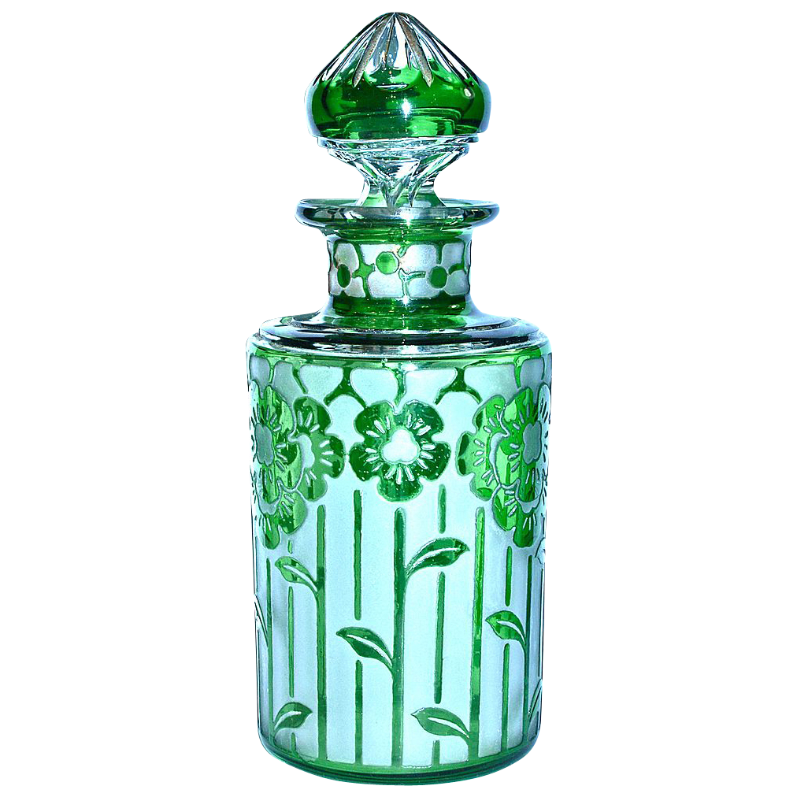

<div class="reProductWrppr">
  
  
    <div class="container ">
      <div class="rePro">
        <h1>Recommended Products</h1>
        <div class="grid-container">
          <owl-carousel-o [options]="customOptions">
            @for (data of category; track data.id) {
            <ng-template carouselSlide>
              <mat-grid-list cols="2" rowHeight="400px">
                @for (card of cards | async; track card) {
                <mat-grid-tile [colspan]="card.cols" [rowspan]="card.rows">
                  <mat-card class="dashboard-card">
                    <mat-card-header>
                      <mat-card-title>Fresh and Floral</mat-card-title>
                    </mat-card-header>
                    
                  </mat-card>
                </mat-grid-tile>
                }
              </mat-grid-list>
            </ng-template>
            }
          </owl-carousel-o>
        </div>
      </div>

      <div class="grid-container ">
        <mat-grid-list cols="2" rowHeight="450px">
            @for (rePro of reProGrid | async; track rePro) {
            <mat-grid-tile [colspan]="rePro.cols" [rowspan]="rePro.rows">
              <mat-card class="dashboard-card">
                <mat-card-header>
                  <mat-card-title>Gourmand Fragrances</mat-card-title>
                </mat-card-header>
                
              </mat-card>
            </mat-grid-tile>
            }
          </mat-grid-list>
      </div>
    </div>
  </div>